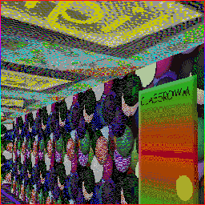
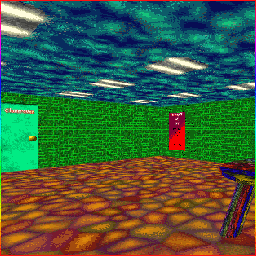
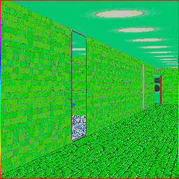

"Garrett's Funny!!!! Animal Game!" (Paint 3D, Shape 3D, and Bevel versions),
"Garrett's really fun!!!! edutainment adventure!",
"Garrett's Really FUN!!!! Math Game AT 3AM (NOT CLICKBAIT)"
"Garret's Funny Animal game 2 HomeComing",
"HACKERPHOBIA | Kalampokiphobia but Ferocious Garrett Sings it",
"HACKARETA | Tsukareta but Garrett Sings it",
"HACKURESU | Taimuresu but Ferocious Garrett Sings it",
"Disposition but Ferocious Garrett Sings it",
"ZOOBREAKER | Heckbreaker but Ferocious Garrett Sings it",
"HACKERSITION | Opposition but Ferocious Garrett Sings it",
"ANIMALPHOBIA | Phonophobia but Ferocious Garrett Sings it"


